Kisunla（donanemab）臨床實務：
最新實證與真實世界經驗Kisunla in Clinical Practice:
Current Evidence and Real-World Experience
樞紐試驗、三年延伸資料、修正劑量遞增、ARIA 處置與台美規範對照Pivotal trial, 3-year extension, modified titration, ARIA management, US–Taiwan comparison
陳培豪 醫師Pei-Hao Chen, MD
馬偕紀念醫院 失智防治中心主任Director, Dementia Prevention Center, MacKay Memorial Hospital
利益揭露：講者為樂意保台灣上市後觀察性研究（NCT07869264）參與醫學中心之試驗主持人。本簡報內容查核至 2026-11-11。Disclosure: site investigator of a Taiwan post-marketing observational study of lecanemab (NCT07869264). Content verified through 2026-11-11.
各位同仁好。今天談欣智樂，也就是 donanemab，在臨床實務上的實證與真實世界經驗。
先做利益揭露：我是樂意保台灣上市後觀察性研究的試驗主持人。今天每一個數字都附出處，頁尾可以對照。
臨床上要回答的三個問題：療效多少、打多久、ARIA 怎麼降Three clinical questions: how much benefit, how long, how to lower ARIA
數字取自 TRAILBLAZER-ALZ 2、美國現行仿單與 TRAILBLAZER-ALZ 6Numbers from TRAILBLAZER-ALZ 2, the current US label and TRAILBLAZER-ALZ 6
1. 療效有多少？1. How large is the benefit?
- 合併族群（含高 tau）減緩 22%22% in the combined population
- Cochrane 2026 認為整類藥物的效果幅度偏小Cochrane 2026 rates the class effect as small
2. 打多久？2. For how long?
- 第 24 週 17%、第 76 週 69%17% at week 24, 69% at week 76
- 仿單用語是「考慮停藥」，由醫師依 PET 判斷Label wording: consider stopping, based on PET
3. ARIA 怎麼降？3. How to lower ARIA?
- 350 → 700 → 1,050 → 1,400 mg，美國仿單 2025-07 起採用350→700→1,050→1,400 mg, US label since Jul 2025
- 第 2、3、4、7 次輸注前做 MRIMRI before infusions 2, 3, 4 and 7
Sims JR, et al. JAMA 2023;330:512-527. PMID 37459141；KISUNLA 美國仿單（DailyMed 第 8 版，2025-12-30 更新）；Wang H, et al. Alzheimers Dement 2025;21:e70062. PMID 40172303；Nonino F, et al. Cochrane 2026. PMID 41985900Sims JR, et al. JAMA 2023;330:512-527. PMID 37459141; KISUNLA US Prescribing Information (DailyMed v8, updated 2025-12-30); Wang H 2025 PMID 40172303; Nonino F, Cochrane 2026 PMID 41985900
病家問欣智樂，其實是在問三件事。
第一，有多少效果。低中 tau 族群在七十六週時，綜合量表的惡化減緩約三成五；把高 tau 一起算是兩成二。
第二，要打多久。仿單記載，第五十二週有百分之四十七達到可停藥的斑塊門檻，七十六週是百分之六十九。
第三，ARIA 怎麼降。改用漸進式劑量後，二十四週的 ARIA-E 從兩成四降到一成四，這是美國仿單去年七月起的建議劑量。
2021–2026 里程碑：從第二期試驗到各國核准與仿單更新Milestones 2021–2026: from phase 2 to approvals and label updates
核准範圍各國不同：台灣、歐盟、英國排除 ApoE ε4 同型合子Indications differ: the EU and UK exclude ApoE ε4 homozygotes
NEJM 第二期 TRAILBLAZER-ALZ：272 人隨機分派，首次採用依斑塊清除減量的設計NEJM phase 2 (n=272): first amyloid-guided dosing design
JAMA 第三期 TRAILBLAZER-ALZ 2：1,736 人，24 項檢定終點有 23 項達顯著JAMA phase 3 (n=1,736): 23 of 24 gated outcomes significant
美國 FDA 核准（7 月 2 日）；同年 9 月日本、10 月英國核准US FDA approval (Jul 2); Japan Sep, UK Oct 2024
台灣核准（限非帶因者與異型合子）；7 月 9 日美國仿單改為漸進劑量；9 月歐盟核准Taiwan approval; US label adopts titration (Jul 9); EU approval (Sep)
TRAILBLAZER-ALZ 2 三年延伸試驗發表：停藥後斑塊每年回升約 2.4 CL3-year LTE published: reaccumulation ~2.4 CL/yr
衛福部公告：lecanemab 與 donanemab 中文仿單增修加框警語，藥商須於 2027-04-22 前完成Taiwan MOHW: boxed-warning revision for both antibodies, due 2027-04-22
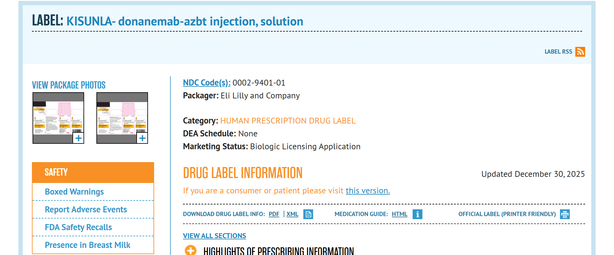
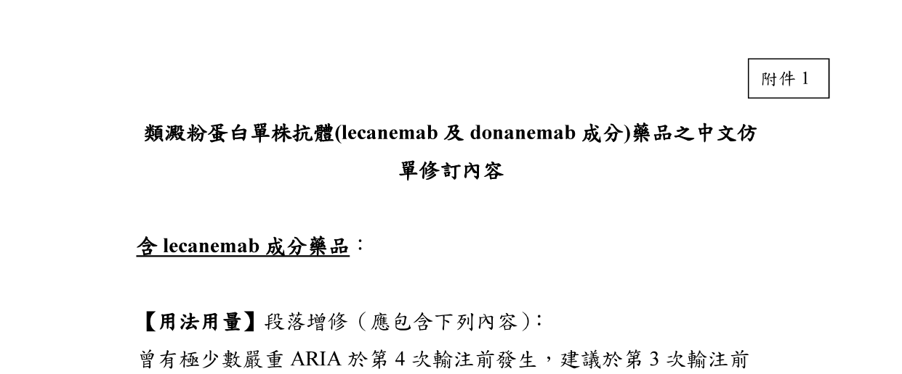
Mintun MA, et al. N Engl J Med 2021;384:1691-1704. PMID 33720637；Sims JR, et al. JAMA 2023;330:512-527. PMID 37459141；KISUNLA 美國仿單（DailyMed 第 8 版，2025-12-30 更新）；Zimmer JA, et al. J Prev Alzheimers Dis 2026;13:100446. PMID 41330788；Jessen F, et al. JPAD 2026. PMID 42202469；衛福部公告 2026-06-22 衛授食字第1151404428號（fda.gov.tw newsContent id=31574）；欣智樂台灣中文仿單（衛部菌疫輸字第 001285 號，2026-02-06 版）；台灣核准月份：中山醫大附醫神經科網頁Mintun 2021 PMID 33720637; Sims JR, et al. JAMA 2023;330:512-527. PMID 37459141; KISUNLA US Prescribing Information (DailyMed v8, updated 2025-12-30); Zimmer JA, et al. J Prev Alzheimers Dis 2026;13:100446. PMID 41330788; Jessen 2026 PMID 42202469; Taiwan MOHW notice 2026-06-22
先用一條時間線對齊大家手上的版本。
二零二一年第二期、二零二三年第三期，分別登在新英格蘭醫學雜誌和 JAMA。
二零二四年七月美國核准，之後是日本、英國。台灣是二零二五年四月，同年七月美國仿單把起始劑量改成漸進式，九月歐盟核准。
今年一月三年延伸資料發表。六月衛福部公告，要求兩個抗體的中文仿單增修加框警語，藥商明年四月二十二日前要完成。
作用機轉：辨識已沉積斑塊上的 N3pG Aβ，清除後抗原消失Mechanism: targets N3pG Aβ in deposited plaque; antigen disappears after clearance
有限療程與 ARIA 都來自同一個機轉The finite course and ARIA share one mechanism
標的：N3pG AβTarget: N3pG Aβ
- IgG1 單株抗體，辨識 N 端焦麩胺酸化的 AβIgG1 antibody to N-terminal pyroglutamate Aβ
- 這種型態只出現在已沉積的斑塊An epitope found in deposited plaque
微膠細胞吞噬Microglial phagocytosis
- 抗體結合後活化微膠細胞清除斑塊Binding activates microglia to clear plaque
- 鄰近其他型態的 Aβ 一併被清除（bystander clearance）Neighbouring Aβ species are cleared as bystanders
斑塊清除後可停藥Stop once plaque is cleared
- N3pG 在腦內含量低，清除後抗原即消失N3pG is scarce; antigen disappears once cleared
- 因此試驗設計了依 PET 結果停藥的機制Hence PET-guided stopping in the trials
代價：ARIAThe cost: ARIA
- 血管壁也有類澱粉沉積Amyloid also sits in vessel walls
- AUR 視 ARIA 為治療引發的 CAA 相關發炎變異型AUR frames ARIA as a treatment-induced CAA-ri variant
Rabinovici GD, et al. J Prev Alzheimers Dis 2025;12:100150. PMID 40155270Rabinovici GD, et al. J Prev Alzheimers Dis 2025;12:100150. PMID 40155270
機轉只講一張，因為它直接決定後面的臨床做法。
Donanemab 辨識的是 N 端焦麩胺酸化的類澱粉，這個型態只在已沉積的斑塊上。
抗體結合後由微膠細胞吞噬，旁邊其他型態的類澱粉也一起被清掉。
抗原清掉就沒有標的，所以試驗設計成看 PET 決定停藥。
代價是血管壁的類澱粉也被動員，這就是 ARIA。
TRAILBLAZER-ALZ 2：1,736 人、依 tau PET 分層、依類澱粉 PET 停藥TRAILBLAZER-ALZ 2: 1,736 participants, tau-stratified, amyloid-guided stopping
兩個主要分析族群：低/中 tau，以及含高 tau 的合併族群Two primary populations: low/medium tau and combined
收案Population
- 8 國 277 個中心，隨機分派 1,736 人；1,320 人（76%）完成試驗277 sites in 8 countries; 1,736 randomized; 76% completed
- 60–85 歲、MMSE 20–28、類澱粉與 tau PET 皆陽性Age 60–85, MMSE 20–28, amyloid and tau PET positive
- 低/中 tau 1,182 人（68.1%），高 tau 552 人（31.8%）Low/medium tau 1,182 (68.1%); high tau 552 (31.8%)
- ApoE ε4 帶因者 71%；亞裔 6%ApoE ε4 carriers 71%; Asian 6%
給藥與停藥設計Dosing and stopping
- 每 4 週靜脈輸注，最長 72 週；前 3 劑 700 mg，之後 1,400 mg（試驗當時的劑量）IV every 4 weeks up to 72 weeks; 700 mg ×3 then 1,400 mg (trial regimen)
- 第 24、52、76 週做類澱粉 PETAmyloid PET at weeks 24, 52 and 76
- 單次 <11 CL，或連續兩次 11 至 <25 CL，即以盲性方式改打安慰劑<11 CL once, or 11 to <25 CL twice: blinded switch to placebo
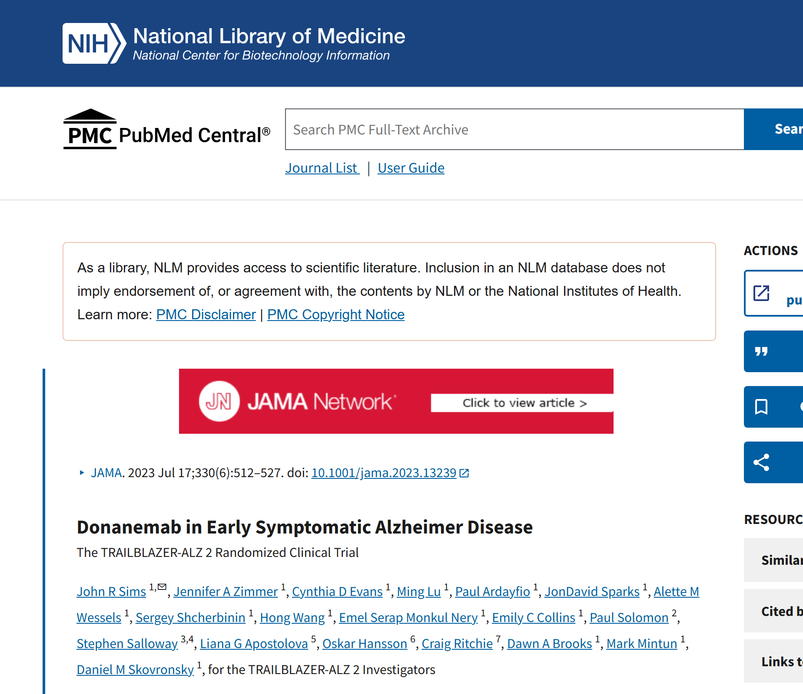
Sims JR, et al. JAMA 2023;330:512-527. PMID 37459141；KISUNLA 美國仿單（DailyMed 第 8 版，2025-12-30 更新） §14Sims JR, et al. JAMA 2023;330:512-527. PMID 37459141; KISUNLA US Prescribing Information (DailyMed v8, updated 2025-12-30) §14
樞紐試驗是 TRAILBLAZER-ALZ 2。
一千七百三十六人，全部做過類澱粉和 tau 的正子造影，三分之二是低中 tau。
每四週打一次。二十四、五十二、七十六週照 PET，斑塊降到門檻以下就在盲性狀態下改成安慰劑。
要提醒的是，我們門診的病人多半沒有 tau PET，套用結果時要保守。
主要療效：低/中 tau 族群減緩 35–36%，合併族群 22–29%Efficacy: 35–36% slowing in low/medium tau, 22–29% in the combined population
CDR-SB 的絕對差異約 0.7 分（76 週）Absolute CDR-SB difference about 0.7 points at 76 weeks
76 週時相對安慰劑的惡化減緩Slowing vs placebo at week 76
iADRS 76 週變化：低/中 tau 族群 −6.02 對 −9.27 分（差 3.25，95% CI 1.88–4.62，P<.001）。iADRS change at week 76, low/medium tau: −6.02 vs −9.27 (difference 3.25; 95% CI 1.88–4.62; P<.001).
怎麼解讀How to read it
- 24 項依序檢定的終點中 23 項達顯著23 of 24 gated outcomes were significant
- 低/中 tau：CDR-Global 進展風險低 38.6%（HR 0.61）；一年內 CDR-SB 無變化 47% 對 29%；約延後 4.4–7.5 個月Low/medium tau: 38.6% lower risk of CDR-Global progression (HR 0.61); no CDR-SB change at 1 year 47% vs 29%; 4.4–7.5 months saved
- 後續模型：在預測進展第 25、50、75 百分位開始治療，CDR-SB 進展分別延緩 60%、33%、17%Modelling: 60%, 33% and 17% delay at the 25th, 50th and 75th percentiles of predicted progression
- 「減緩百分比」是兩組惡化量的比例，不是症狀改善Percent slowing is a ratio of decline, not improvement
Sims JR, et al. JAMA 2023;330:512-527. PMID 37459141；KISUNLA 美國仿單（DailyMed 第 8 版，2025-12-30 更新） §14；Rabinovici GD, et al. J Prev Alzheimers Dis 2025;12:100150. PMID 40155270；Raket LL, et al. Alzheimers Dement 2026;22:e71577. PMID 42273802Sims JR, et al. JAMA 2023;330:512-527. PMID 37459141; KISUNLA US Prescribing Information (DailyMed v8, updated 2025-12-30) §14; Rabinovici GD, et al. J Prev Alzheimers Dis 2025;12:100150. PMID 40155270; Raket 2026 PMID 42273802
療效數字。
低中 tau 族群，綜合量表減緩百分之三十五，CDR-SB 減緩百分之三十六。
把高 tau 算進來的合併族群，分別是百分之二十二和二十九。
後續分析顯示越早治療延緩越多。但要記得，百分比是惡化量的比例，不是進步。
換成絕對值，十八個月 CDR-SB 差零點七分。兩種說法都要給病家。
這個幅度有沒有臨床意義？正反兩方的資料（點卡片看內容）Is the effect clinically meaningful? Evidence on both sides (tap the cards)
事後分析支持延後進展；Cochrane 與模擬研究提出質疑Post hoc analyses support delayed progression; Cochrane and a simulation study raise doubts
Atri 2026 事後分析：MCI 進展到輕度失智的風險低 33%（HR 0.67，95% CI 0.52–0.87）；輕度到中度低 50%（HR 0.50）；需居家協助的風險低 27%（HR 0.74）。Atri 2026 (post hoc): MCI→mild dementia risk 33% lower (HR 0.67); mild→moderate 50% lower (HR 0.50); need for in-home support 27% lower (HR 0.74).
Cochrane 2026（17 個試驗、20,342 人，整類藥物）：CDR-SB 標準化差 −0.12（95% CI −0.24 至 0.00），判定效果微小；donanemab 只納入 1 個試驗。Cochrane 2026 (17 trials, 20,342 people, whole class): CDR-SB SMD −0.12; effect judged trivial; only one donanemab trial; functional unblinding flagged.
Dwivedi 2026 模擬研究：早期治療組在延伸期的年化惡化比雙盲期快（差 0.66，95% CI 0.41–0.91）；以歷史世代當對照易有選擇與流失偏差。Dwivedi 2026 simulation: early-start decline was faster in the extension than in the double-blind phase (Δ0.66); historical controls invite selection and attrition bias.
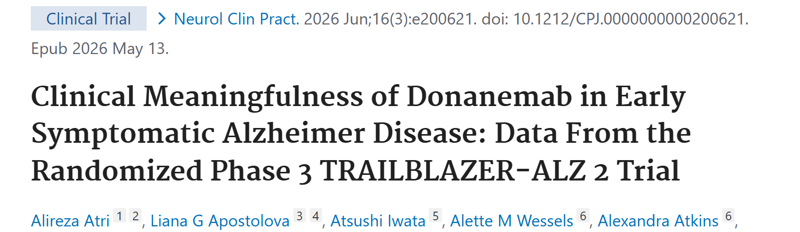
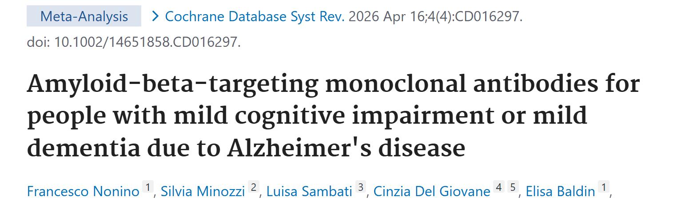
Atri A, et al. Neurol Clin Pract 2026;16:e200621. PMID 42128444；Nonino F, et al. Cochrane Database Syst Rev 2026;4:CD016297. PMID 41985900；Dwivedi AK, et al. BMJ Neurol Open 2026;8:e001649. PMID 42602524Atri A, et al. Neurol Clin Pract 2026;16:e200621. PMID 42128444；Nonino F, et al. Cochrane Database Syst Rev 2026;4:CD016297. PMID 41985900；Dwivedi AK, et al. BMJ Neurol Open 2026;8:e001649. PMID 42602524
這個幅度到底有沒有意義，文獻上有兩種聲音。
支持的一方：今年的事後分析顯示，輕度認知障礙進展到輕度失智的風險低三成三。
質疑的一方：Cochrane 今年的回顧把整類藥物合併，認為效果微小。要注意 donanemab 只有一個試驗被納入。
另一篇模擬研究質疑延伸期的長期效益，因為對照組是歷史世代。
所以門診說明時，我兩邊的數字都講。
斑塊清除與生物標記：76 週減少 87 CL，69% 達到可停藥門檻Amyloid and biomarkers: −87 CL at week 76; 69% met stop criteria
p-tau217 與 GFAP 下降，NfL 無差異p-tau217 and GFAP fall; NfL unchanged
類澱粉 PET 變化Amyloid PET change
- 基線平均 104.0 對 101.8 CL（合併族群）Baseline mean 104.0 vs 101.8 CL (combined)
- TRAILBLAZER-ALZ 4：6、12、18 個月清除率（<24.1 CL）37.9%、70.0%、76.8%TRAILBLAZER-ALZ 4: clearance 37.9%, 70.0%, 76.8% at 6, 12, 18 months
達到可改安慰劑門檻的比例Eligible to switch to placebo
- 門檻：單次 <11 CL，或連續兩次 11 至 <25 CLCriteria: <11 CL once, or 11 to <25 CL twice
- 低/中 tau 族群有 52% 在 1 年內完成療程52% of low/medium tau participants completed treatment by 1 year
血漿標記Plasma markers
- p-tau217（log10）76 週變化 −0.19 對 +0.03，P<.0001p-tau217 (log10) change −0.19 vs +0.03, P<.0001
- 第二期：p-tau217 與 GFAP 自第 12 週起低於安慰劑Phase 2: p-tau217 and GFAP lower than placebo from week 12
- NfL 與 Aβ42/40 兩組無顯著差異NfL and Aβ42/40: no significant difference
- 治療後斑塊越低，CDR-SB 進展越慢（R² 0.87）；與 NfL 無相關（R² 0.03）Lower post-treatment amyloid tracked slower CDR-SB decline (R² 0.87); none with NfL (R² 0.03)
KISUNLA 美國仿單（DailyMed 第 8 版，2025-12-30 更新） §12.2、§14；Salloway S, et al. Alzheimers Dement 2025;21:e70293. PMID 40390253；Pontecorvo MJ, et al. JAMA Neurol 2022;79:1250-1259. PMID 36251300；Lu M, et al. JAMA Neurol 2025;82:1251-1256. PMID 41082199；Shcherbinin S, et al. JAMA Neurol 2022;79:1015-1024. PMID 36094645KISUNLA US Prescribing Information (DailyMed v8, updated 2025-12-30) §12.2, §14; Salloway 2025 PMID 40390253; Pontecorvo 2022 PMID 36251300; Lu 2025 PMID 41082199; Shcherbinin 2022 PMID 36094645
生物標記。
七十六週時，類澱粉 PET 平均減少八十七個 Centiloid，安慰劑組幾乎不變。
達到可以改打安慰劑門檻的比例：二十四週一成七，五十二週四成七，七十六週六成九。
血漿的 p-tau217 和 GFAP 會下降，但神經絲輕鏈沒有差別。
所以斑塊清除是確定的，但不要說整條因果鏈都被證實了。
三年延伸：CDR-SB 差 1.2 分（對外部對照），斑塊年回升 2.4 CL3-year extension: CDR-SB −1.2 vs external control; reaccumulation ~2.4 CL/yr
TRAILBLAZER-ALZ 2 LTE，2026 年 1 月發表TRAILBLAZER-ALZ 2 LTE, published January 2026
三年結果（延伸期 78 週，雙盲）Three-year results (78-week blinded extension)
- 早期治療組對加權 ADNI 外部對照：CDR-SB 差 −1.2 分（95% CI −1.7 至 −0.7）Early-start vs weighted ADNI control: CDR-SB −1.2 (95% CI −1.7 to −0.7)
- 延後治療組開始用藥 76 週後：差 −0.8 分（−1.3 至 −0.3）Delayed-start, 76 weeks after initiation: −0.8 (−1.3 to −0.3)
- 早期對延後治療：三年內 CDR-Global 進展風險較低（HR 0.73，P<.001）Early vs delayed start: lower risk of CDR-Global progression (HR 0.73, P<.001)
- 52 週前完成療程者，三年時 CDR-SB 的減緩幅度相近Those completing by week 52 showed similar slowing at 3 years
停藥後After stopping
- 用藥 76 週後接受 PET 者，兩組皆有 >75% 達到清除（<24.1 CL）>75% of those scanned 76 weeks after starting reached clearance (<24.1 CL)
- 納入延伸資料後，模型估計斑塊回升中位數 2.4 CL/年With LTE data, modelled median reaccumulation 2.4 CL/yr
- 延伸期 2 例死亡：1 例 ARIA-E、1 例溶栓後顱內出血Two LTE deaths: one ARIA-E, one intracranial haemorrhage after thrombolysis
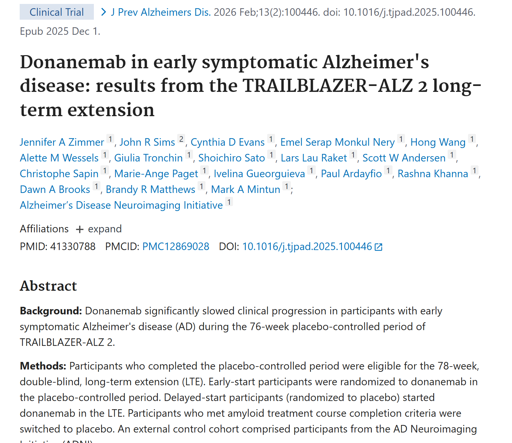
Zimmer JA, et al. J Prev Alzheimers Dis 2026;13:100446. PMID 41330788；Dwivedi AK, et al. BMJ Neurol Open 2026;8:e001649. PMID 42602524Zimmer JA, et al. J Prev Alzheimers Dis 2026;13:100446. PMID 41330788; Dwivedi 2026 PMID 42602524
第一章最後看三年資料。
早期治療組三年時，和加權後的 ADNI 外部對照相比，CDR-SB 少惡化一點二分。
停藥之後，斑塊回升的速度估計每年二點四個 Centiloid。
限制是延伸期沒有同期安慰劑組，這個效益是和歷史世代比出來的。
ARIA 發生率：ARIA-E 24.4%、ARIA-H 31.3%，有症狀的 ARIA-E 5.8%ARIA rates: ARIA-E 24.4%, ARIA-H 31.3%, symptomatic ARIA-E 5.8%
3,030 人整合分析；TRAILBLAZER-ALZ 2 單一試驗：ARIA-H 31.4%（微出血 26.8%、表淺鐵沉積 15.7%）Integrated analysis of 3,030 participants; TRAILBLAZER-ALZ 2 alone: ARIA-E 24.0% (205; 52 symptomatic)
| 事件Event | 安慰劑 n=999Placebo n=999 | donanemab n=984Donanemab n=984 | 開放標籤 n=1,047Open-label n=1,047 |
|---|---|---|---|
| 任何 ARIAAny ARIA | 14.2% | 37.0% | 32.0% |
| ARIA-EARIA-E | 1.9% | 24.4%24.4% | 19.8% |
| ARIA-HARIA-H | 13.0% | 31.3%31.3% | 27.2% |
| 腦出血 >1 cmMacrohemorrhage | 0.2% | 0.3% | 0.4% |
有症狀 ARIA-ESymptomatic ARIA-E
嚴重 ARIA-ESerious ARIA-E
單獨的 ARIA-HIsolated ARIA-H
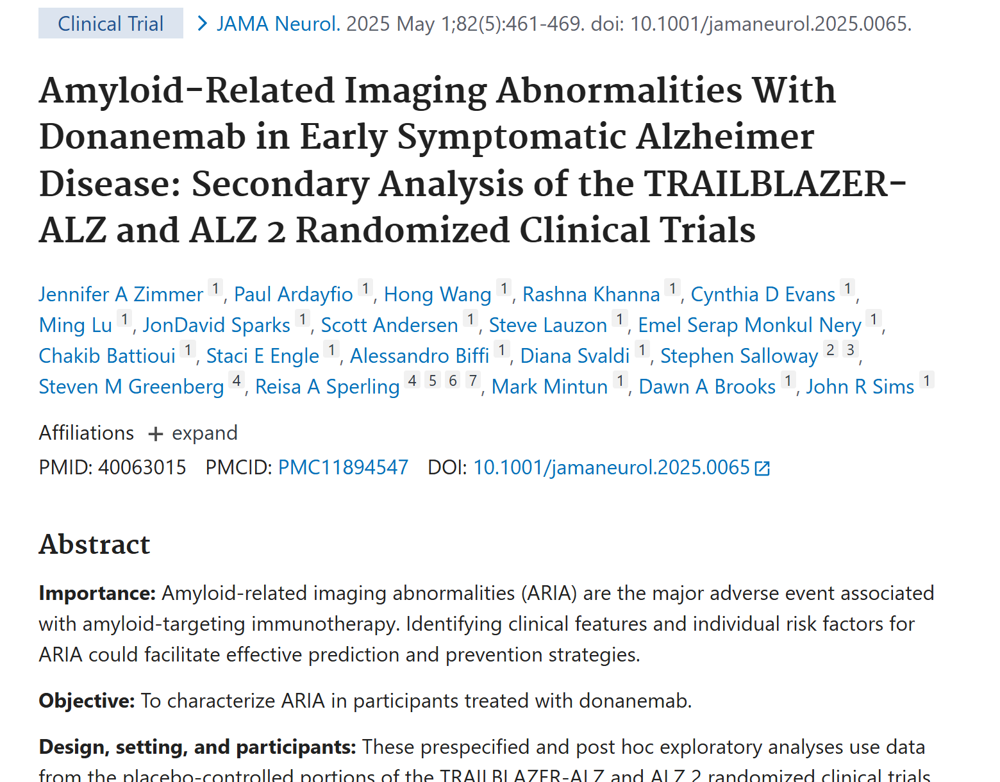
Zimmer JA, et al. JAMA Neurol 2025;82:461-469. PMID 40063015（TRAILBLAZER-ALZ 與 ALZ 2 安慰劑對照期合併，加上開放標籤附加試驗，共 3,030 人）Zimmer JA, et al. JAMA Neurol 2025;82:461-469. PMID 40063015 (pooled placebo-controlled trials plus open-label addendum; n=3,030)
第二章談安全性。
整合分析裡，ARIA-E 百分之二十四點四，ARIA-H 百分之三十一點三，安慰劑組分別是一點九和十三。
有症狀的 ARIA-E 是百分之五點八，被列為嚴重不良事件的是百分之一點五。
注意安慰劑組也有一成三的 ARIA-H，那是疾病本身的背景值。
ApoE ε4 與 ARIA-E：同型合子 41.7%，非帶因者 14.8%（點卡片）ApoE ε4 and ARIA: ARIA-E 41.7% in homozygotes vs 14.8% in non-carriers (tap cards)
安慰劑對照試驗 donanemab 組 984 人依基因型分層Donanemab arm (n=984) by genotype
ARIA-E 14.8%（43/291）｜ARIA-H 18.9%。影像重度 ARIA-E 0.4%、重度 ARIA-H 4%。ARIA-E 14.8% (43/291) | ARIA-H 18.9%. Severe radiographic ARIA-E 0.4%, ARIA-H 4%.
ARIA-E 24.1%（126/522）｜ARIA-H 31.0%。影像重度 ARIA-E 2%、重度 ARIA-H 8%。相對非帶因者 OR 2.03（95% CI 1.55–2.67）。ARIA-E 24.1% (126/522) | ARIA-H 31.0%. Severe ARIA-E 2%, ARIA-H 8%. OR 2.03 vs non-carriers.
ARIA-E 41.7%（70/168）｜ARIA-H 53.6%。影像重度 ARIA-E 3%、重度 ARIA-H 22%。相對非帶因者 OR 4.57（95% CI 3.27–6.39）。ARIA-E 41.7% (70/168) | ARIA-H 53.6%. Severe ARIA-E 3%, ARIA-H 22%. OR 4.57 vs non-carriers.
基因型以外的獨立危險因子Other independent risk factors
- 基線微出血 2–4 顆（對 0 顆）：OR 2.53Baseline microhemorrhages 2–4 vs 0: OR 2.53
- 基線有表淺鐵沉積：OR 2.18Baseline superficial siderosis: OR 2.18
- 類澱粉斑塊量較高、平均動脈壓較高Higher amyloid burden; higher mean arterial pressure
- 使用降血壓藥者風險較低：OR 0.58Antihypertensive use: OR 0.58
各地規範Regulatory positions
- 美國：加框警語，建議用藥前檢測 ApoE；未檢測仍可治療US: boxed warning; testing advised but not mandatory
- 歐盟、英國：適應症限非帶因者與異型合子EU and UK: indicated only for non-carriers and heterozygotes
- 台灣：適應症限非帶因者與異型合子；2026-06-22 公告增修加框警語Taiwan: indicated only for non-carriers and heterozygotes; boxed-warning revision (2026-06-22)
Zimmer JA, et al. JAMA Neurol 2025;82:461-469. PMID 40063015；Rabinovici GD, et al. J Prev Alzheimers Dis 2025;12:100150. PMID 40155270 表 4；KISUNLA 美國仿單（DailyMed 第 8 版，2025-12-30 更新） §5.1；Jessen F, et al. JPAD 2026. PMID 42202469；衛福部公告 2026-06-22 衛授食字第1151404428號Zimmer JA, et al. JAMA Neurol 2025;82:461-469. PMID 40063015; Rabinovici GD, et al. J Prev Alzheimers Dis 2025;12:100150. PMID 40155270 Table 4; KISUNLA US Prescribing Information (DailyMed v8, updated 2025-12-30) §5.1; Jessen 2026 PMID 42202469; Taiwan MOHW notice 2026-06-22
ARIA 最強的預測因子是 ApoE ε4。請大家先猜三個基因型的數字。
非帶因者，ARIA-E 百分之十四點八。
一個 ε4，百分之二十四點一。
兩個 ε4，百分之四十一點七，影像重度的 ARIA-H 高達兩成二。
另外基線微出血、表淺鐵沉積、血壓也是獨立危險因子。歐盟和英國乾脆不核准同型合子。
ARIA-E 的時程：近六成在第 3 次輸注前出現，影像消退中位數 58 天ARIA-E timing: nearly 60% by the third infusion; median resolution 58 days
再給藥後約三成復發About three in ten recur after rechallenge
什麼時候發生Onset
- 仿單：多數在治療前 24 週內Label: most within the first 24 weeks
- 任何時間都可能發生，也可能不只一次Can occur at any time and more than once
多久消退Resolution
- 578 次 ARIA-E 中 96.0% 影像上消退96.0% of 578 episodes resolved radiographically
- 仿單：12 週內 63%、20 週內 80% 消退Label: 63% by 12 weeks, 80% by 20 weeks
症狀與再給藥Symptoms and rechallenge
- 最常見：頭痛、意識混亂Most common: headache, confusional state
- 有症狀者中 19.2% 為重度症狀19.2% of symptomatic cases were severe
- 71.1% 再給藥；其中 68.6% 未再發71.1% rechallenged; 68.6% of them had no recurrence
Zimmer JA, et al. JAMA Neurol 2025;82:461-469. PMID 40063015；KISUNLA 美國仿單（DailyMed 第 8 版，2025-12-30 更新） §5.1Zimmer JA, et al. JAMA Neurol 2025;82:461-469. PMID 40063015; KISUNLA US Prescribing Information (DailyMed v8, updated 2025-12-30) §5.1
時間軸上怎麼看。
百分之五十八的人，第一次 ARIA-E 在第三次輸注前就出現，所以前三個月最要緊。
影像消退的中位數是五十八天，大約兩個月。
有症狀的大約四分之一，最常見是頭痛和意識混亂。再給藥的人裡，約三成會再發。
修正劑量遞增：24 週 ARIA-E 由 23.7% 降到 13.7%Modified titration: 350→700→1,050→1,400 mg cut 24-week ARIA-E from 23.7% to 13.7%
350→700→1,050→1,400 mg；TRAILBLAZER-ALZ 6；美國仿單 2025 年 7 月採用TRAILBLAZER-ALZ 6; adopted in the US label in July 2025
原劑量（試驗用）Original regimen
修正遞增（台美現行仿單）Modified titration (US and Taiwan labels)
TRAILBLAZER-ALZ 6（843 人隨機分四組）TRAILBLAZER-ALZ 6 (n=843, four arms)
重點Key points
- 24 週相對風險下降 41%；RRR ≥20% 的機率 94%41% relative risk reduction at week 24; 94% probability of RRR ≥20%
- 76 週有症狀 ARIA-E：2.8% 對 4.8%Symptomatic ARIA-E at week 76: 2.8% vs 4.8%
- ε4 同型合子 76 週：23.8%（5/21）對 57.1%（12/21），人數少ε4 homozygotes at week 76: 23.8% (5/21) vs 57.1% (12/21); small numbers
- 斑塊下降幅度相近；24 週總劑量相同One 350 mg vial moves from dose 1 to dose 3; same total by week 24
Wang H, et al. Alzheimers Dement 2025;21:e70062. PMID 40172303；Wang H, et al. J Prev Alzheimers Dis 2025;12:100266. PMID 40619285；KISUNLA 美國仿單（DailyMed 第 8 版，2025-12-30 更新） §2.2Wang H, et al. Alzheimers Dement 2025;21:e70062. PMID 40172303; Wang H, et al. J Prev Alzheimers Dis 2025;12:100266. PMID 40619285; KISUNLA US Prescribing Information (DailyMed v8, updated 2025-12-30) §2.2
這一頁是近一年最重要的更新。
原本前三次都打七百毫克。修正後改成三百五、七百、一千零五十，第四次起一千四。
二十四週的 ARIA-E 從百分之二十三點七降到十三點七。
七十六週仍然維持差距，斑塊清除的幅度沒有打折。
美國仿單去年七月起改列這個劑量，台灣今年二月版的中文仿單也相同。
ARIA 相關死亡個案：不限同型合子，兩例發生在溶栓之後ARIA-related deaths: not confined to homozygotes; two followed thrombolysis
依已發表文獻整理，不補寫文獻沒有的年齡與細節Summarized from published reports only
已發表的 ARIA 相關死亡Published ARIA-related deaths
- TRAILBLAZER-ALZ 2 雙盲期：3 人發生嚴重 ARIA 後死亡；2 人為 ε4 異型合子、1 人為非帶因者，皆未使用抗凝或抗血小板藥TRAILBLAZER-ALZ 2: 3 deaths after serious ARIA; 2 heterozygotes, 1 non-carrier
- 其中 1 人基線有大範圍表淺鐵沉積，打 2 劑後致命性腦出血One had extensive baseline superficial siderosis and a fatal haemorrhage after 2 doses
- 其中 1 人重度 ARIA-E 緩解後再給藥，再次發生嚴重 ARIAOne died after rechallenge following severe ARIA-E
- 延伸期：1 位異型合子第 5 劑後死於 ARIA-E，類固醇在發現後第 5 天才開始LTE: a heterozygote died of ARIA-E after dose 5; steroids began 5 days after detection
- 延伸期與 TRAILBLAZER-ALZ 6 各 1 人：疑似中風接受溶栓後顱內出血死亡One each in the LTE and TRAILBLAZER-ALZ 6: fatal haemorrhage after thrombolysis for suspected stroke
可以學到什麼Lessons
- 死亡個案不限於同型合子Deaths were not confined to homozygotes
- 基線表淺鐵沉積是警訊；AUR 建議排除Baseline siderosis is a red flag; AUR advises exclusion
- 重度 ARIA 後再給藥要非常保守Be very cautious rechallenging after severe ARIA
- 嚴重 ARIA 應及早給高劑量類固醇Start high-dose steroids early in serious ARIA
- 急性神經症狀先想到 ARIA，溶栓前先做 MRIThink ARIA first; MRI before thrombolysis
Zimmer JA, et al. JAMA Neurol 2025;82:461-469. PMID 40063015；Sims JR, et al. JAMA 2023;330:512-527. PMID 37459141；Rabinovici GD, et al. J Prev Alzheimers Dis 2025;12:100150. PMID 40155270；Zimmer JA, et al. JPAD 2026. PMID 41330788Zimmer JA, et al. JAMA Neurol 2025;82:461-469. PMID 40063015; Sims JR, et al. JAMA 2023;330:512-527. PMID 37459141; Rabinovici GD, et al. J Prev Alzheimers Dis 2025;12:100150. PMID 40155270; Zimmer 2026 PMID 41330788
死亡個案我只講文獻上有的。
雙盲期三位嚴重 ARIA 後死亡，兩位是異型合子，一位不帶因。延伸期和另一個試驗各有一位，是疑似中風打了溶栓之後顱內出血。
教訓是：不帶兩個 ε4 也會出事；基線鐵沉積要排除；急性症狀先照 MRI。
整體死亡數兩組是十七比十二。
輸注反應：約 8–9%，四分之三在前 4 次輸注內首次發生Infusion reactions: about 8–9%; three quarters first occur within four infusions
預防用藥在再輸注時未降低風險Prophylaxis did not lower risk at rechallenge
發生率與時間Rate and timing
- TRAILBLAZER-ALZ 2：8.7% 對 0.5%TRAILBLAZER-ALZ 2: 8.7% vs 0.5%
- 77.0% 的首次反應發生在第 4 次輸注前77.0% had their first reaction by the fourth infusion
- 當日反應 87.8% 在輸注中或結束後 30 分鐘內87.8% of same-day reactions occurred during or within 30 minutes
嚴重度Severity
- 立即型反應：輕度 56.5%、中度 38.4%Immediate events: 56.5% mild, 38.4% moderate
- 常見：噁心嘔吐 3.5%、畏寒 3.3%、紅斑 3.1%Common: nausea/vomiting 3.5%, chills 3.3%, erythema 3.1%
- 仿單：過敏反應（含全身性過敏）3%；修正遞增組輸注反應 16%Label: hypersensitivity incl. anaphylaxis 3%; 16% reactions with the titrated regimen
處置Management
- 65.1% 再次輸注，多數可耐受65.1% were rechallenged, mostly tolerated
- 再輸注時預防用藥（多為抗組織胺）未降低再發風險Prophylaxis at rechallenge did not reduce recurrence
- 預測因子：藥物過敏史、全身性過敏史Predictors: prior drug allergy or anaphylaxis
- AUR：曾有反應者，下次輸注前 30 分鐘給 diphenhydramine 25–50 mg 與 acetaminophen 650–1,000 mgAUR: after a reaction, premedicate 30 minutes before the next infusion
- 輸注室需備妥 epinephrine、氧氣與靜脈類固醇Keep epinephrine, oxygen and IV steroids at hand
Ardayfio P, et al. Alzheimers Dement (N Y) 2026;12:e70229. PMID 41804324；Sims JR, et al. JAMA 2023;330:512-527. PMID 37459141；KISUNLA 美國仿單（DailyMed 第 8 版，2025-12-30 更新） §5.2–5.3、§6.1；Rabinovici GD, et al. J Prev Alzheimers Dis 2025;12:100150. PMID 40155270Ardayfio 2026 PMID 41804324; Sims JR, et al. JAMA 2023;330:512-527. PMID 37459141; KISUNLA US Prescribing Information (DailyMed v8, updated 2025-12-30) §5.2–5.3, §6.1; Rabinovici GD, et al. J Prev Alzheimers Dis 2025;12:100150. PMID 40155270
輸注反應。
整合分析是百分之八點三，七成七在前四次輸注就出現第一次。
多數輕到中度，嚴重的千分之五。
今年的分析發現，再輸注時加抗組織胺並沒有降低再發。
所以不用每個人都常規預防，但前四次要盯緊。
真實世界資料（2026）：ARIA 13–21%，修正遞增後更低，但樣本都很小Real-world data (2026): ARIA 13–21%, lower with modified titration, but samples are small
美國、義大利、日本的單一中心世代Single-centre cohorts from the US, Italy and Japan
| 研究Study | 地點／人數Setting / n | 主要發現Main findings |
|---|---|---|
| Shields 2026Shields 2026 | 美國，51 人，1 年US single centre, n=51, 1 yr | ARIA 20.8%（10/48），皆無症狀；輸注反應 13.7%；停藥 15.7%ARIA 20.8% (10/48), none symptomatic; infusion reactions 13.7%; discontinued 15.7% |
| Hakim 2026Hakim 2026 | 美國，donanemab 83 人US, 83 on donanemab | ARIA 13.3%；修正遞增 8.1% 對原劑量 28.6%（P=.03）；輸注反應 12.0%ARIA 13.3%; modified 8.1% vs original 28.6% (P=.03); reactions 12.0%; surveillance MRI caught 95.2% |
| Agosta 2026Agosta 2026 | 義大利，donanemab 20 人Italy, 20 on donanemab | 有症狀 ARIA-E 10%（輕度）；6 個月 PET 6/8 人 <11 CLMildly symptomatic ARIA-E 10%, asymptomatic ARIA-H 15%; 6/8 below 11 CL at 6 months |
| Kujuro 2026Kujuro 2026 | 日本，18 人Japan, n=18, 12-month PET | 斑塊移除 96%；72% 目視轉陰96% removal; 72% visually negative; unrelated to 12-month cognition |
| Otomi 2026Otomi 2026 | 日本，20 人Japan, n=20 | Centiloid 52.3 → −5.6；85% 目視轉陰Centiloid 52.3 → −5.6; 85% converted to negative |
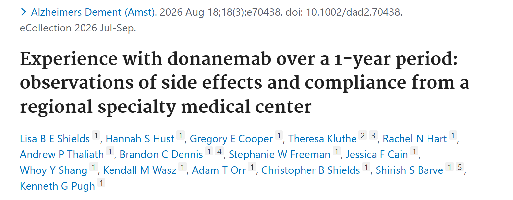
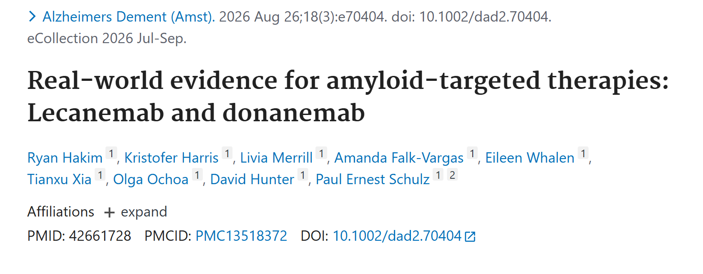
Shields LBE, et al. Alzheimers Dement (Amst) 2026;18:e70438. PMID 42614867；Hakim R, et al. 同刊 e70404. PMID 42661728；Agosta F, et al. Alzheimers Res Ther 2026. PMID 41857623；Kujuro Y, et al. Alzheimers Dement (Amst) 2026;18:e70539. PMID 42966975；Otomi Y, et al. Jpn J Radiol 2026;44:2012-2018. PMID 42507054Shields 2026 PMID 42614867; Hakim 2026 PMID 42661728; Agosta 2026 PMID 41857623; Kujuro 2026 PMID 42966975; Otomi 2026 PMID 42507054
真實世界資料今年才開始出現。
美國兩個中心的 ARIA 是一成三到兩成一。用修正遞增的病人只有百分之八點一。日本兩個小世代，一年後八成左右目視轉陰。
原始條目在右邊，可以點開放大。
限制很清楚：都是幾十個人、一年以內。台灣的資料目前還沒有發表。
donanemab 與 lecanemab：各自樞紐試驗的數字並列（非直接比較）Donanemab and lecanemab: pivotal-trial numbers side by side (not head to head)
給藥間隔、療程設計與不良事件型態不同Different intervals, treatment duration and adverse-event profiles
| 項目Item | donanemab（TRAILBLAZER-ALZ 2）Donanemab (TRAILBLAZER-ALZ 2) | lecanemab（Clarity AD）Lecanemab (Clarity AD) |
|---|---|---|
| 標的Target | 已沉積斑塊的 N3pG AβN3pG Aβ in deposited plaque | 可溶性原纖維（protofibrils）Soluble protofibrils |
| 輸注頻率Dosing interval | 每 4 週Every 4 weeks | 每 2 週Every 2 weeks |
| 療程Duration | 依類澱粉 PET 考慮停藥Consider stopping by amyloid PET | 持續給藥Continuous |
| ARIA-E（有症狀）ARIA-E (symptomatic) | 24.0%（6.1%）24.0% (6.1%) | 12.6%（2.8%）12.6% (2.8%) |
| 輸注反應Infusion reactions | 8.7%8.7% | 26.4%26.4% |
| 收案的 tau 條件Tau entry criterion | 需 tau PET 陽性Tau PET positive required | 不需要Not required |
同一中心的真實世界比較Within-centre real-world comparison
- Hakim 2026：lecanemab ARIA 11.2%（10/89），donanemab 13.3%（11/83）Hakim 2026: ARIA 11.2% with lecanemab, 13.3% with donanemab
- 修正遞增的 donanemab 與 lecanemab 安全性相近（各項 P>.40）Modified-titration donanemab was comparable to lecanemab (all P>.40)
- 輸注反應：donanemab 12.0%、lecanemab 9.0%Infusion reactions: 12.0% vs 9.0%
注意Caution
- 兩藥沒有直接比較的隨機試驗No head-to-head randomized trial exists
- 兩個樞紐試驗的收案條件、量表與 ARIA 判讀方式不同Entry criteria, scales and ARIA ascertainment differ
Sims JR, et al. JAMA 2023;330:512-527. PMID 37459141；van Dyck CH, et al. N Engl J Med 2023;388:9-21. PMID 36449413；Hakim R, et al. Alzheimers Dement (Amst) 2026;18:e70404. PMID 42661728Sims JR, et al. JAMA 2023;330:512-527. PMID 37459141; van Dyck 2023 PMID 36449413; Hakim 2026 PMID 42661728
第二章收尾，把兩個藥並排。
Donanemab 每四週、可依 PET 停藥，ARIA-E 兩成四；lecanemab 每兩週、持續給藥，ARIA-E 一成三，但輸注反應兩成六。
同一個中心的真實世界資料裡，改用修正遞增後兩藥的 ARIA 相近。
沒有頭對頭試驗，收案條件也不同。
所以只能並列，不能排名。
誰適合用：早期阿茲海默症、病理確認、基線 MRI 與基因型評估Who is eligible: early AD, confirmed pathology, baseline MRI and genotype
依美國適當用藥建議（AUR）；歐盟核准族群另有事後分析Per the US Appropriate Use Recommendations; post hoc data for the EU-eligible group
適合的病人（美國 AUR）Appropriate candidates (US AUR)
- 阿茲海默症所致 MCI 或輕度失智（臨床分期 3–4）MCI or mild dementia due to AD (clinical stages 3–4)
- MMSE 20–30MMSE 20–30
- 以類澱粉 PET 或腦脊髓液確認病理Pathology confirmed by amyloid PET or CSF
- 不要求 tau PETTau PET is not required
- 治療前做 ApoE 基因型檢測ApoE genotyping before treatment
應排除（美國 AUR）Exclusions (US AUR)
- 基線微出血 >4 顆More than 4 microbleeds at baseline
- 任何皮質表淺鐵沉積Any cortical superficial siderosis
- 血管因素是認知障礙的主要原因Major vascular contribution to impairment
- 符合自發性 CAA 相關發炎的 MRI 表現MRI criteria for spontaneous CAA-ri
- 使用抗凝血劑者Patients on anticoagulants
- 中度以上失智（分期 ≥5）Moderate or more severe dementia (stage ≥5)
歐盟核准族群的資料Data in the EU-eligible population
- CDR-SB 76 週差 −0.7 分（95% CI −1.0 至 −0.4）CDR-SB difference −0.7 at week 76
- CDR-Global 進展到下一期的風險低 40.3%40.3% lower risk of progressing on CDR-Global
- 輸注反應 8.0%Infusion reactions 8.0%
Rabinovici GD, et al. J Prev Alzheimers Dis 2025;12:100150. PMID 40155270；Jessen F, et al. J Prev Alzheimers Dis 2026;13:100605. PMID 42202469；KISUNLA 美國仿單（DailyMed 第 8 版，2025-12-30 更新） §5.1Rabinovici GD, et al. J Prev Alzheimers Dis 2025;12:100150. PMID 40155270; Jessen 2026 PMID 42202469; KISUNLA US Prescribing Information (DailyMed v8, updated 2025-12-30) §5.1
第三章是門診怎麼做。先看誰適合。
輕度認知障礙或輕度失智，MMSE 二十到三十，病理要用 PET 或腦脊髓液確認，不強制 tau PET。
排除條件：微出血超過四顆、任何表淺鐵沉積、正在用抗凝血劑。
如果只看歐盟核准的族群，也就是排除同型合子，ARIA-E 是百分之十九點五。
試驗條件和 AUR 不完全一樣，引用時要寫清楚是哪一個。
病理確認：PET 或腦脊髓液；血液標記還不能單獨決定收治或停藥Confirming pathology: PET or CSF; blood markers cannot yet decide eligibility or stopping
血漿 p-tau217 偵測斑塊清除的 AUC 0.61（2026）Plasma p-tau217 detects clearance with AUC 0.61 (2026)
類澱粉 PETAmyloid PET
- 試驗用 florbetapir 或 florbetaben，中央判讀Trials used florbetapir or florbetaben with central reads
- 目前唯一經驗證可評估治療後斑塊清除的工具The only tool validated for assessing clearance after treatment
- 只靠目視判讀收治，會納入斑塊量比試驗低的病人Visual reads alone admit patients with less amyloid than in trials
腦脊髓液CSF
- 美國 FDA 核准的比值：Aβ42/Aβ40、p-tau181/Aβ42、t-tau/Aβ42FDA-cleared ratios: Aβ42/Aβ40, p-tau181/Aβ42, t-tau/Aβ42
- 相對 PET 的敏感度與特異度約 90%About 90% sensitivity and specificity against PET
- 單看 Aβ42 不如看比值Aβ42 alone is inferior to the ratios
血液標記Blood biomarkers
- AUR：不建議只憑血液檢測陽性就決定收治AUR: do not establish eligibility on a blood test alone
- 台灣：尚未核准血漿標記用於阿茲海默症診斷，僅供輔助Taiwan: no plasma marker is approved for AD diagnosis
- 追蹤用途：血漿 p-tau217 判定斑塊已清除的 AUC 只有 0.61（830 人，第 52 週）For follow-up: plasma p-tau217 detects clearance with AUC only 0.61 (n=830, week 52)
Rabinovici GD, et al. J Prev Alzheimers Dis 2025;12:100150. PMID 40155270；Collins EC, et al. Alzheimers Dement 2026;22:e71740. PMID 42565262；台灣臨床失智症學會《Lecanemab 台灣適當用藥建議》第二版（2025-12-19）Rabinovici GD, et al. J Prev Alzheimers Dis 2025;12:100150. PMID 40155270; Collins 2026 PMID 42565262; Taiwan Dementia Society lecanemab AUR, 2nd ed. (2025-12-19)
確認病理。
類澱粉 PET 是唯一能評估治療後清除程度的工具。
腦脊髓液看比值，準確度和 PET 相當。
血液標記，台灣還沒有核准用來診斷。而且今年的分析顯示，用 p-tau217 判斷斑塊有沒有清乾淨，AUC 只有零點六一。
所以停藥的判斷目前還是要靠 PET。
MRI 監測：基線，以及第 2、3、4、7 次輸注前；高風險者第 12 次前再一次MRI monitoring: baseline and before infusions 2, 3, 4 and 7; again before 12 if higher risk
台美仿單規定相同；另有 AUR 與台灣共識的補充Same in the US and Taiwan labels; AUR and Taiwan consensus additions
治療前 12 個月內；微出血 1–4 顆或同型合子且超過 6 個月者建議重做Within 12 months; repeat if >6 months old with 1–4 microbleeds or homozygosity
仿單規定Label requirement
仿單規定；58.3% 的首次 ARIA-E 在此之前出現Label; 58.3% of first ARIA-E events occur by now
仿單規定；升到 1,400 mg 之前Label; before reaching 1,400 mg
仿單規定Label requirement
AUR 建議高風險者加做（ε4 帶因者、曾發生 ARIA）AUR: add for higher-risk patients
台灣共識的 MRI 最低條件Taiwan consensus: minimum MRI requirements
- 至少 1.5T，建議 3TAt least 1.5T; 3T preferred
- 序列：T2* GRE 或 SWI，加上 FLAIR；切片 ≤5 mm、TE ≥20 msT2* GRE or SWI plus FLAIR; slices ≤5 mm; TE ≥20 ms
- AUR：追蹤盡量用同一台機器，至少同場強AUR: same scanner where possible, same field strength at minimum
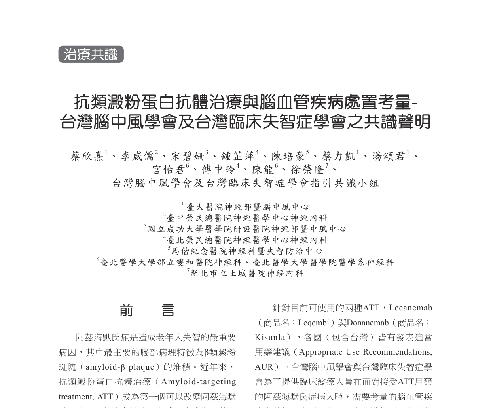
KISUNLA 美國仿單（DailyMed 第 8 版，2025-12-30 更新） §2.3；Rabinovici GD, et al. J Prev Alzheimers Dis 2025;12:100150. PMID 40155270；Zimmer JA, et al. JAMA Neurol 2025;82:461-469. PMID 40063015；蔡欣熹等。台灣腦中風學會及台灣臨床失智症學會共識聲明。Formosan J Stroke 2025;7(2):83-98. doi:10.6318/FJS.202506_7(2).0001KISUNLA US Prescribing Information (DailyMed v8, updated 2025-12-30) §2.3; Rabinovici GD, et al. J Prev Alzheimers Dis 2025;12:100150. PMID 40155270; Zimmer JA, et al. JAMA Neurol 2025;82:461-469. PMID 40063015; Taiwan Stroke Society & Taiwan Dementia Society consensus. Formosan J Stroke 2025;7(2):83-98
MRI 的時間點。
基線要在十二個月內。
仿單規定第二、三、四、七次輸注前各一次。
AUR 建議高風險的人在第十二次前再加一次。
規格方面照台灣共識：至少一點五 T，要有 GRE 或 SWI 加 FLAIR。有症狀隨時加做。
ARIA 處置矩陣（美國仿單）：依影像嚴重度與症狀決定續用或暫停ARIA management matrix (US label): continue or suspend by radiographic severity and symptoms
只有無症狀且影像輕度可以照原劑量續用Only asymptomatic, radiographically mild ARIA may continue unchanged
ARIA-E（仿單表 2）ARIA-E (label Table 2)
ARIA-H（仿單表 3）ARIA-H (label Table 3)
影像分級（ARIA-H）Radiographic grading (ARIA-H)
- 微出血：新增 ≤4 顆輕度、5–9 顆中度、≥10 顆重度Microhemorrhages: ≤4 new mild, 5–9 moderate, ≥10 severe
- 表淺鐵沉積：1 處輕度、2 處中度、>2 處重度Superficial siderosis: 1 area mild, 2 moderate, >2 severe
暫停之後（仿單）After suspending (label)
- ARIA-E：影像消退且症狀緩解後，依臨床判斷決定是否恢復ARIA-E: resume by clinical judgment after resolution
- ARIA-H：影像穩定且症狀緩解；可於 2–4 個月後追蹤 MRIARIA-H: after stabilization; consider MRI at 2–4 months
- 腦出血 >1 cm：暫停，穩定後由臨床判斷續用或永久停藥Haemorrhage >1 cm: suspend; continue or stop by clinical judgment
KISUNLA 美國仿單（DailyMed 第 8 版，2025-12-30 更新） §2.3（表 2、表 3）、§5.1KISUNLA US Prescribing Information (DailyMed v8, updated 2025-12-30) §2.3 (Tables 2–3), §5.1
發現 ARIA 怎麼辦，先看仿單。
ARIA-E：無症狀而且影像輕度可以續用；影像中度以上一律暫停。
ARIA-H 也一樣，只有無症狀輕度可以續用。
暫停之後什麼時候恢復，仿單交給臨床判斷。
仿單沒有寫永久停藥的數字門檻，那來自專家建議。
什麼時候永久停藥：仿單、美國 AUR 與台灣共識三份文件並列When to stop permanently: the label, the US AUR and the Taiwan consensus side by side
三者不一致時並列呈現，不混寫成同一條規則Where they differ, show them side by side
| 項目Item | 美國仿單US label | 美國 AUR（2025）US AUR (2025) | 台灣雙學會共識（2025）Taiwan consensus (2025) |
|---|---|---|---|
| 影像重度 ARIARadiographically severe ARIA | 暫停，臨床判斷Suspend; judgment | 停藥（不論有無症狀）Discontinue regardless of symptoms | 嚴重症狀即終止Stop if severe symptoms |
| 新增微出血New microhemorrhages | ≥10 顆屬重度，暫停≥10 is severe: suspend | >10 顆停藥>10: discontinue | >10 顆終止>10: stop |
| 表淺鐵沉積Superficial siderosis | >2 處屬重度，暫停>2 areas severe: suspend | >1 處停藥；出現 1 處即重新討論>1 area: discontinue; discuss at 1 | —— |
| 腦出血 >1 cmHaemorrhage >1 cm | 暫停，臨床判斷Suspend; judgment | 任何大出血即停藥Any macrohemorrhage: discontinue | 終止Stop |
| ARIA-E 復發Recurrent ARIA-E | 未訂次數No number given | —— | 發生 ≥2 次終止Stop after ≥2 episodes |
| 嚴重 ARIA 的治療Treating serious ARIA | —— | methylprednisolone 1 g/日靜脈 5 天，之後口服漸減數週IV methylprednisolone 1 g/day ×5, then oral taper | —— |
KISUNLA 美國仿單（DailyMed 第 8 版，2025-12-30 更新） §2.3；Rabinovici GD, et al. J Prev Alzheimers Dis 2025;12:100150. PMID 40155270 §5.4–5.6；蔡欣熹等。台灣腦中風學會及台灣臨床失智症學會共識聲明。Formosan J Stroke 2025;7(2):83-98. doi:10.6318/FJS.202506_7(2).0001KISUNLA US Prescribing Information (DailyMed v8, updated 2025-12-30) §2.3; Rabinovici GD, et al. J Prev Alzheimers Dis 2025;12:100150. PMID 40155270 §5.4–5.6; Taiwan Stroke Society & Taiwan Dementia Society consensus. Formosan J Stroke 2025;7(2):83-98
永久停藥的門檻，三份文件寫法不同。
仿單都是暫停加臨床判斷。美國 AUR 寫得最明確：影像重度、任何大出血、新增微出血超過十顆、鐵沉積超過一處就停。台灣共識另外加一條，ARIA-E 發生兩次以上終止。
所以引用時要標明出處，不要把共識寫成仿單。
用藥中出現急性神經症狀：你會怎麼做？（點選項）Acute neurological symptoms on treatment: what would you do? (tap an option)
抗血栓藥併用與急性中風處置的台美文件對照Antithrombotics and acute stroke: US and Taiwan guidance
情境：用藥第 3 個月，突發失語 1 小時到急診，CT 無出血Scenario: month 3 of treatment, sudden aphasia for 1 hour, CT shows no bleed
已有溶栓後致命顱內出血的個案；ARIA-E 的局部神經症狀可以像中風。Fatal haemorrhages after thrombolysis are reported; ARIA-E can mimic stroke.
台灣共識與仿單的方向：偵測到或無法排除 ARIA 時不建議靜脈溶栓；大血管阻塞可考慮取栓。Consistent with the Taiwan consensus and the label; consider thrombectomy for large-vessel occlusion.
延誤鑑別；若是嚴重 ARIA-E 應及早處理。Delays diagnosis; serious ARIA-E needs early treatment.
抗血栓藥Antithrombotics
- 試驗中併用抗血栓藥（多為 aspirin）者 ARIA-H 30%，未併用者 29%ARIA-H 30% with antithrombotics (mostly aspirin) vs 29% without
- 腦出血 >1 cm：0.6%（2/349）對 0.4%（2/504）；非 aspirin 的資料太少，仿單認為無法下結論Haemorrhage >1 cm: 0.6% vs 0.4%; too few non-aspirin exposures to conclude
- 美國 AUR：使用抗凝血劑者不建議用藥；不要為了用藥而停掉有適應症的抗凝US AUR: avoid donanemab with anticoagulants; do not stop indicated anticoagulation to start it
- 台灣共識：單一抗血小板可併用、短期雙抗時暫停；長期口服抗凝停藥或個別決策，心房顫動可考慮左心耳封堵Taiwan consensus: single antiplatelet acceptable; individualize long-term anticoagulation; consider LAAO in AF
KISUNLA 美國仿單（DailyMed 第 8 版，2025-12-30 更新） §5.1；Rabinovici GD, et al. J Prev Alzheimers Dis 2025;12:100150. PMID 40155270；蔡欣熹等。台灣腦中風學會及台灣臨床失智症學會共識聲明。Formosan J Stroke 2025;7(2):83-98. doi:10.6318/FJS.202506_7(2).0001KISUNLA US Prescribing Information (DailyMed v8, updated 2025-12-30) §5.1; Rabinovici GD, et al. J Prev Alzheimers Dis 2025;12:100150. PMID 40155270; Taiwan Stroke Society & Taiwan Dementia Society consensus. Formosan J Stroke 2025;7(2):83-98
一個情境題。
用藥第三個月，突然失語一小時，電腦斷層沒有出血。請大家選。
建議是先做 MRI。ARIA-E 可以表現得像中風，已經有溶栓後死亡的個案。大血管阻塞可以考慮取栓。
抗血栓藥方面，美國 AUR 不建議併用抗凝血劑；台灣共識是個別決策，心房顫動可以考慮左心耳封堵。
實務上最重要的是讓急診知道病人在用這個藥。
依類澱粉 PET 考慮停藥：仿單用語、追蹤時間與目前的限制Amyloid PET-guided stopping: label wording, timing and current limits
仿單是「考慮停藥」，不是達標就必須立即停The label says consider stopping, not must stop
仿單怎麼寫What the label says
- 「依類澱粉 PET 顯示斑塊降至極低量，考慮停止給藥」Consider stopping when amyloid PET shows plaque reduced to minimal levels
- 試驗門檻：單次 <11 CL，或連續兩次 11 至 <25 CLTrial criteria: <11 CL once, or 11 to <25 CL twice
- 台灣仿單：無法以經驗證的方法監測斑塊清除時，可持續治療 18 個月Taiwan label: if clearance cannot be monitored by a validated method, treat for up to 18 months
什麼時候照 PETWhen to scan
- 試驗中每 6 個月照一次Trials scanned every 6 months
- 個案報告：2 位病人在第 6、第 9 次輸注前 PET 已完全清除而停藥Case report: 2 patients cleared before infusions 6 and 9 and stopped
- 斑塊基線較低者可能更早達標Lower baseline amyloid may clear sooner
還不能做的事What cannot be done yet
- 不能用血漿 p-tau217 取代 PET 判定清除（AUC 0.61）Plasma p-tau217 cannot replace PET for clearance (AUC 0.61)
- 仿單：76 週之後是否需要再給藥，沒有資料Label: no data beyond 76 weeks on whether further dosing is needed
- 清除程度與短期認知變化的關係，小型世代結果不一致Small cohorts disagree on clearance versus short-term cognition
KISUNLA 美國仿單（DailyMed 第 8 版，2025-12-30 更新） §2.2、§14；Rabinovici GD, et al. J Prev Alzheimers Dis 2025;12:100150. PMID 40155270 §7；Hwang J, et al. Neurocase 2026;32:229-232. PMID 42711950；Collins EC, et al. Alzheimers Dement 2026. PMID 42565262；Kujuro Y, et al. PMID 42966975；Ivanidze J, et al. AJNR 2026. PMID 42055956KISUNLA US Prescribing Information (DailyMed v8, updated 2025-12-30) §2.2, §14; Rabinovici GD, et al. J Prev Alzheimers Dis 2025;12:100150. PMID 40155270 §7; Hwang 2026 PMID 42711950; Collins 2026 PMID 42565262; Kujuro 2026 PMID 42966975; Ivanidze 2026 PMID 42055956
第四章，停藥。
仿單的用語是，斑塊降到極低量時考慮停止給藥。台灣仿單另外寫，沒辦法監測斑塊時可以治療十八個月。
AUR 建議開始治療後十二到十八個月照追蹤 PET。也有個案在第六、第九次輸注前就清乾淨。
目前不能用抽血取代 PET；七十六週以後要不要再打，仿單說沒有資料。
對病家我會說，這是有機會停藥的療程。
停藥之後：斑塊每年回升約 2.4–2.8 CL，再治療時機尚無資料After stopping: amyloid rises about 2.4–2.8 CL a year; no data on re-treatment timing
模型推估回到 24.1 CL 需 3.9 年（預測區間 1.9–8.3 年）Modelled 3.9 years to return to 24.1 CL (prediction interval 1.9–8.3)
斑塊回升速度Reaccumulation rate
- 第二期資料的模型：回到 24.1 CL 需 3.9 年（95% 預測區間 1.9–8.3 年）Phase 2 modelling: 3.9 years to return to 24.1 CL (95% prediction interval 1.9–8.3)
- 這是模型推估，區間很寬A model estimate with a wide interval
停藥後的臨床軌跡Clinical course after stopping
- 52 週前完成療程者，三年時 CDR-SB 的減緩幅度與整體相近（對 ADNI 外部對照）Those finishing by week 52 showed similar CDR-SB slowing at 3 years (vs ADNI control)
- 延伸期未見新的安全訊號No new safety signals in the extension
- 何時重新照 PET、回升到多少要再治療：目前沒有指引或試驗資料No guidance or trial data yet on when to rescan or re-treat
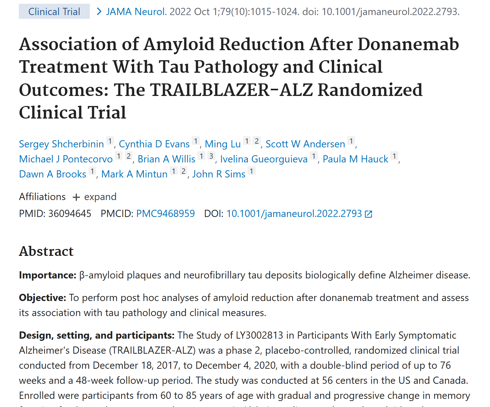
KISUNLA 美國仿單（DailyMed 第 8 版，2025-12-30 更新） §12.2；Zimmer JA, et al. J Prev Alzheimers Dis 2026;13:100446. PMID 41330788；Shcherbinin S, et al. JAMA Neurol 2022;79:1015-1024. PMID 36094645KISUNLA US Prescribing Information (DailyMed v8, updated 2025-12-30) §12.2; Zimmer JA, et al. J Prev Alzheimers Dis 2026;13:100446. PMID 41330788; Shcherbinin 2022 PMID 36094645
停藥之後會怎樣。
斑塊每年回升二點四到二點八個 Centiloid。模型推估回到陽性門檻要三點九年，但區間是一點九到八點三年。
五十二週前完成療程的人，三年時的減緩幅度相近。至於什麼時候要再治療，目前沒有資料。
所以停藥後還是要定期追蹤。
台灣現況：已核准、健保未給付、2026 年公告增修加框警語Taiwan: approved, not reimbursed, boxed-warning revision announced in 2026
費用為媒體報導的估計值，實際以各院為準Costs are media estimates; hospitals differ
法規Regulation
- 許可證衛部菌疫輸字第 001285 號；仿單 2026-02-06 版Licence MOHW-BI-001285; label version 2026-02-06
- 適應症限 ApoE ε4 異型合子與非帶因者Indicated only for ApoE ε4 heterozygotes and non-carriers
- 2026-06-22 衛福部公告：兩個抗體的仿單增修加框警語，2027-04-22 前完成MOHW notice 2026-06-22: boxed-warning revision, due 2027-04-22
給付與費用Coverage and cost
- 健保目前未給付欣智樂與樂意保Neither antibody is reimbursed by NHI at present
- 媒體報導（2025-09）：前三個月二十多萬元，之後每月約十二萬元，一年約百萬元Media report (Sep 2025): over NT$200,000 for the first 3 months, about NT$120,000 a month thereafter, roughly NT$1 million a year
- 治療前自費評估約 8.4 萬元（類澱粉 PET 約 7 萬、MRI 約 1.2 萬、ApoE 約 2 千）Pre-treatment work-up about NT$84,000
台灣與美國不同的地方Where Taiwan differs from the US
- 血漿標記：台灣尚未核准用於阿茲海默症診斷Plasma biomarkers: not approved for AD diagnosis in Taiwan
- 抗凝血劑：美國 AUR 不建議併用；台灣共識採個別決策Anticoagulants: US AUR advises against; Taiwan consensus individualizes
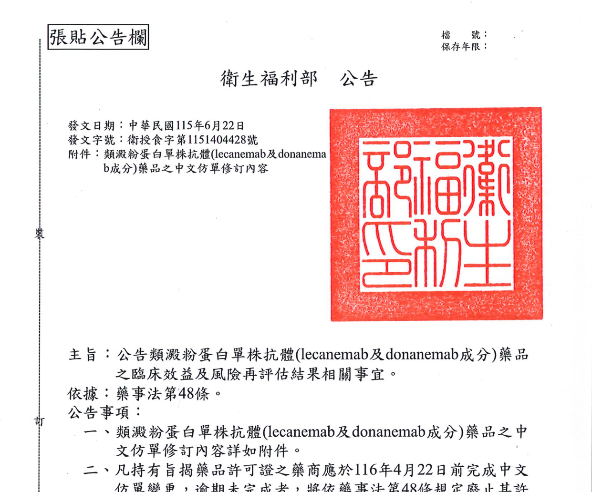
衛福部公告 2026-06-22 衛授食字第1151404428號（fda.gov.tw newsContent id=31574）；欣智樂台灣中文仿單（衛部菌疫輸字第 001285 號，2026-02-06 版）；早安健康 2025-09-10 報導；台灣腦中風學會及台灣臨床失智症學會共識聲明。Formosan J Stroke 2025;7(2):83-98；台灣臨床失智症學會《Lecanemab 台灣適當用藥建議》第二版；健保現況：講者確認（2026-11-10）Taiwan MOHW notice 2026-06-22; Everyday Health (Taiwan) 2025-09-10; Formosan J Stroke 2025;7(2):83-98; Taiwan Dementia Society AUR 2nd ed.; NHI status confirmed by the speaker (2026-11-10)
台灣的現況。
欣智樂的適應症限非帶因者和異型合子。今年六月二十二日衛福部公告，兩個抗體的中文仿單都要增修加框警語。
健保目前沒有給付。媒體報導的估計是打滿一年大約一百萬，治療前的檢查另外八萬多。
台美不同的地方：台灣排除同型合子，血漿標記還沒核准，抗凝血劑採個別決策。
講費用的時候，MRI 和追蹤 PET 要一起算。
醫病共享決策四步驟：條件、價值、理解、決定Shared decision-making in four steps: eligibility, values, understanding, decision
不用藥也是合理選項；同意是持續的過程Declining is reasonable; consent is ongoing
1. 條件1. Eligibility
- 早期阿茲海默症、病理確認Early AD with confirmed pathology
- MRI 與 ApoE 結果MRI and ApoE results
2. 在意什麼2. Values
- 想延後的是哪些功能Which abilities matter most
- 能否配合前半年密集回診與 MRICapacity for frequent visits and MRI
3. 確認理解3. Check understanding
- 是延後惡化，不是恢復Slows decline; does not restore
- ARIA 的機率依基因型不同ARIA risk varies by genotype
- 全自費的金額Full out-of-pocket cost
4. 決定4. Decide
- 用藥、暫緩或不用藥Treat, defer or decline
- 不用藥同樣是被尊重的選擇Declining is an equally respected choice
- 過程中可以隨時重新討論Revisit at any time
François G, et al. Eur J Neurol 2026;33:e70800. PMID 42969459；Rabinovici GD, et al. JPAD 2025. PMID 40155270；台灣神經科醫病共享決策輔助評估表（PDA）François 2026 PMID 42969459; Rabinovici 2025 PMID 40155270; Taiwan neurology patient decision aid
共享決策，四個步驟。
先確認條件。
再問病家在意什麼、能不能配合回診。
確認他們理解這是延後而不是恢復，也知道風險和費用。
最後一起決定。不用藥也是被尊重的選擇，而且之後可以隨時重談。
從評估到停藥的五個站：每一站依據哪一份文件Five stations from assessment to stopping, and the document behind each
評估、排除、討論、輸注、PET 與追蹤Assess, exclude, discuss, infuse, PET and follow-up
評估Assess
- MCI／輕度失智MCI or mild dementia
- MMSE 20–30MMSE 20–30
- PET 或腦脊髓液PET or CSF
排除Exclude
- 微出血 >4 顆>4 microbleeds
- 表淺鐵沉積Superficial siderosis
- 抗凝血劑Anticoagulants
討論Discuss
- ApoE 基因型ApoE genotype
- 共享決策Shared decision
- 急診識別卡Emergency alert card
輸注Infuse
- 每 4 週一次Every 4 weeks
- 第 2、3、4、7 次前 MRIMRI before 2, 3, 4, 7
- 前 4 次注意輸注反應Watch the first 4 infusions
PET 與追蹤PET and follow-up
- 12–18 個月追蹤 PETFollow-up PET at 12–18 months
- 達門檻考慮停藥Consider stopping at threshold
- 停藥後定期追蹤Follow after stopping
Rabinovici GD, et al. J Prev Alzheimers Dis 2025;12:100150. PMID 40155270；KISUNLA 美國仿單（DailyMed 第 8 版，2025-12-30 更新）；台灣腦中風學會及台灣臨床失智症學會共識聲明。Formosan J Stroke 2025;7(2):83-98Rabinovici GD, et al. J Prev Alzheimers Dis 2025;12:100150. PMID 40155270; KISUNLA US Prescribing Information (DailyMed v8, updated 2025-12-30); Formosan J Stroke 2025;7(2):83-98
把整個流程收成一張。
評估和排除。
討論之後開始輸注，前半年四次 MRI。
十二到十八個月照 PET，考慮停藥。
每一站要知道依據的是哪一份文件。
總結：確定的五件事，與還不確定的五件事Summary: five things established, five still uncertain
資料查核至 2026-11-11Evidence checked through 2026-11-11
可以確定的What is established
- 低/中 tau 族群 76 週惡化減緩 35–36%；CDR-SB 絕對差約 0.7 分35–36% slowing in low/medium tau; about 0.7 CDR-SB points
- 76 週斑塊減少 87 CL，69% 達到可停藥門檻−87 CL at week 76; 69% met stop criteria
- ARIA-E 24%，同型合子 41.7%；近六成在第 3 次輸注前出現ARIA-E 24%, 41.7% in homozygotes; nearly 60% by infusion 3
- 修正劑量遞增把 24 週 ARIA-E 降到 13.7%Modified titration lowers 24-week ARIA-E to 13.7%
- 第 2、3、4、7 次輸注前 MRIMRI before infusions 2, 3, 4 and 7
還不確定的What remains uncertain
- 效果幅度的臨床意義，文獻有正反意見Clinical meaningfulness is debated
- 三年效益來自外部對照比較Three-year benefit rests on an external control
- 停藥後何時追蹤 PET、何時再治療When to rescan and re-treat after stopping
- 血液標記尚不能取代 PET 判定清除Blood markers cannot yet replace PET for clearance
- 台灣尚無已發表的 donanemab 真實世界資料No published Taiwan real-world donanemab data
各項出處見前頁與 EVIDENCE_REGISTRY.md；歡迎來信交流：陳培豪 a7662888@gmail.comSources as cited on earlier slides. Contact: Pei-Hao Chen, a7662888@gmail.com
最後總結。
確定的：療效幅度、斑塊清除、ARIA 的機率和時間點、修正劑量遞增有效、MRI 的四個時間點。
不確定的：臨床意義的爭論、長期效益的對照方式、停藥後怎麼追蹤、血液標記，還有台灣自己的資料。
謝謝各位，歡迎交流。